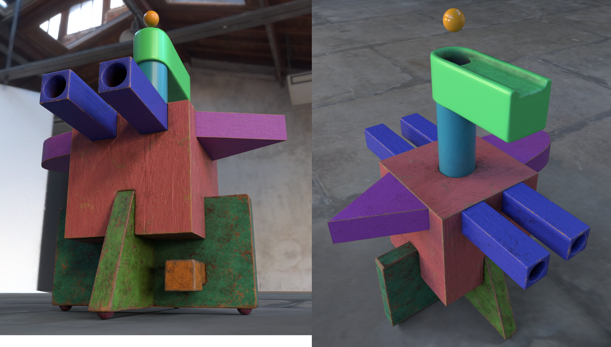
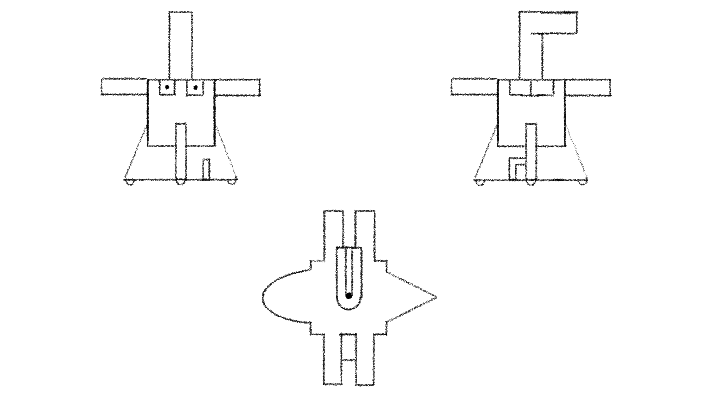
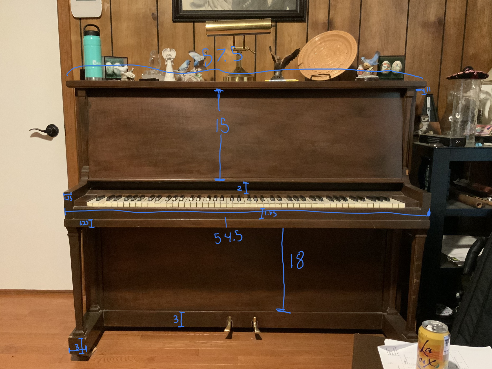
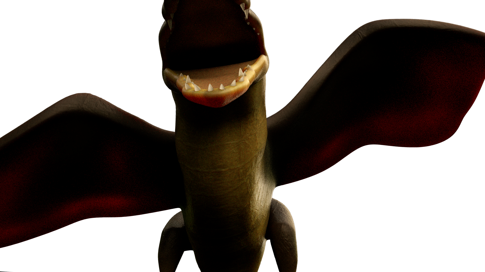
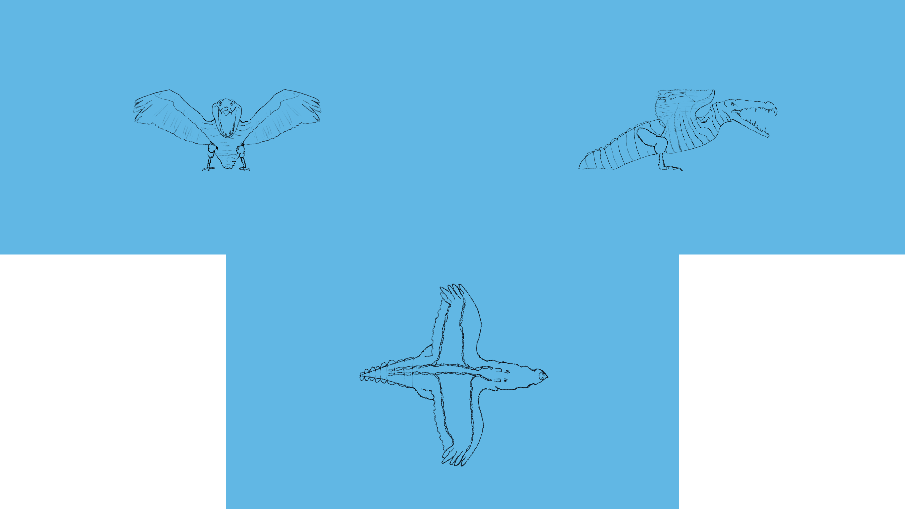
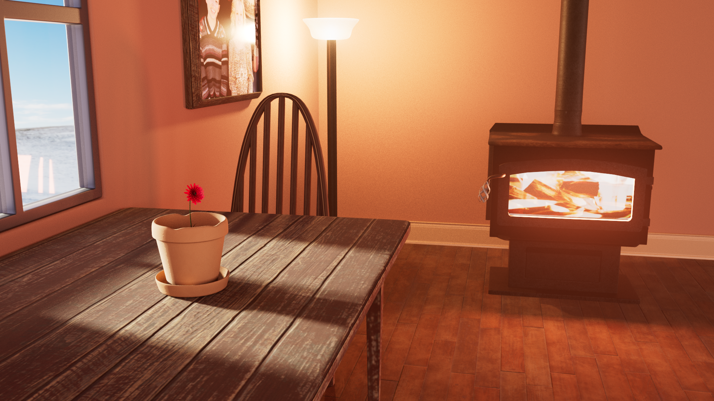
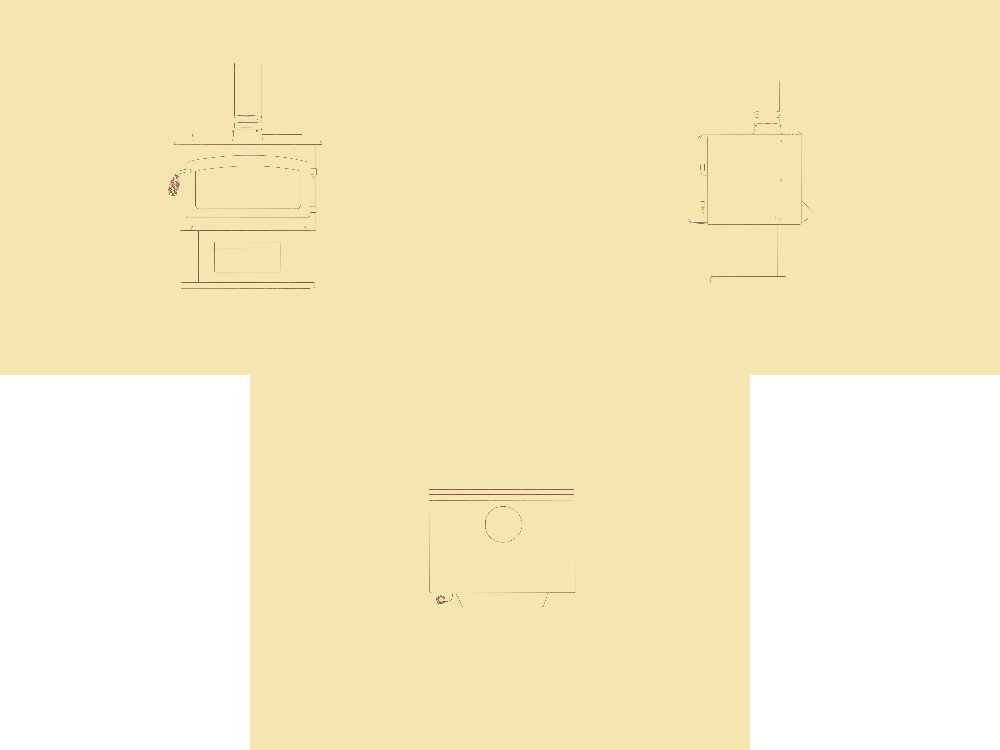

This was my first animation created entirely within Unreal Engine 5, and also my first animation outside of school! -June 2023
I pieced together this scene for a challenge to myself, as I love Unreal Engine
and wanted to get more familiar with it. All of the sci-fi assets where obtained from
kitbash3D and the envirnment assest from Epic's Valley of the Ancient project.
Toy Exhibit
Final project for my Texturing, Lighting, and Rendering class. -November 2022
This project was to made to expose us to texturing in Substance Painter. We were to design a "toy" or "gizmo" that appears in a station, performs an action, and then returns back to it's station. My idea involved a big machine made out of those colored building blocks kids use as the main body, then it would recieve a small toy ball, shoot it out, and then move over to retrieve it.
I hand-animated this in Maya and then transferred it over to Unreal Engine for rendering; there is a glitch where the ball can be seen clipping through the object because the visibility keyframes I set for the ball didn't transfer over to Unreal from Maya.

All textures were designed in Adobe Substance 3D Painter.

My orignal Orthographics for this project.
Piano Wasteland
Final project for my 3D Animation class. -May 2022
This was our "Character Animation" project where we had to create 3D typeface characters that moved around and did something related to what they spelled out. Animated in Maya and rendered with Arnold.

These are measurements I took of my paino at home in order to model to scale in Maya.
The Volturedile
This was a composited turnaround I made for my Texturing, Lighting, and Rendering class. -October 2022
This project was to introduce us to texturing in Zbrush, and compositing in After Effects. The goal was to combine multiple animals into one new fantastical creature, and I chose to combine a volture and a crocodile, resulting in this terrifying creature. The model was created in Maya, textured in Zbrush, rendered in Maya, and composited in After Effects.

All textures were designed in Zbrush.

My orignal Orthographics for this project.
Still Life
This is a rendered still for my Texturing, Lighting, and Rendering class. -September 2022

All 3D Assets seen were modeled and textured by me in Maya and rendered with Arnold in Maya. Some textures were obtained from Textures.com

Orthographics for the stove asset. This is moddeled after a wood-burning stove at my house.